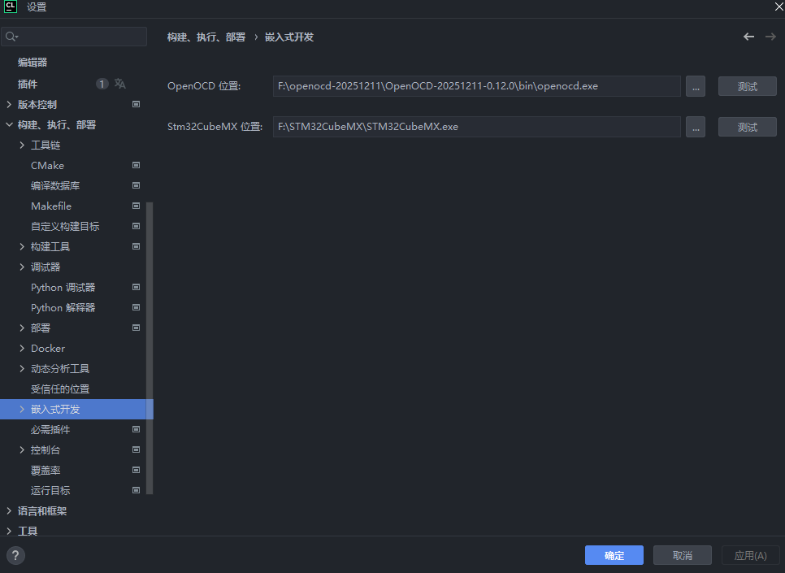
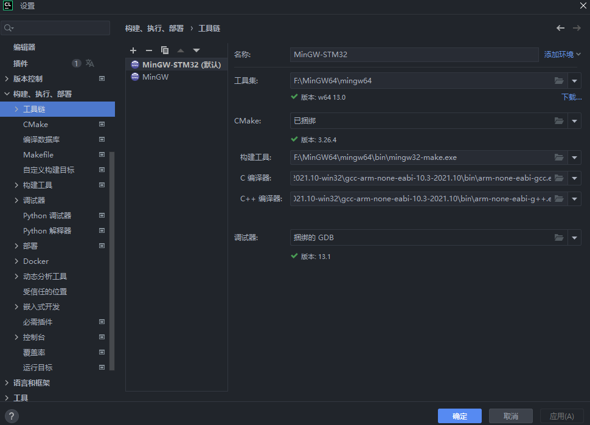
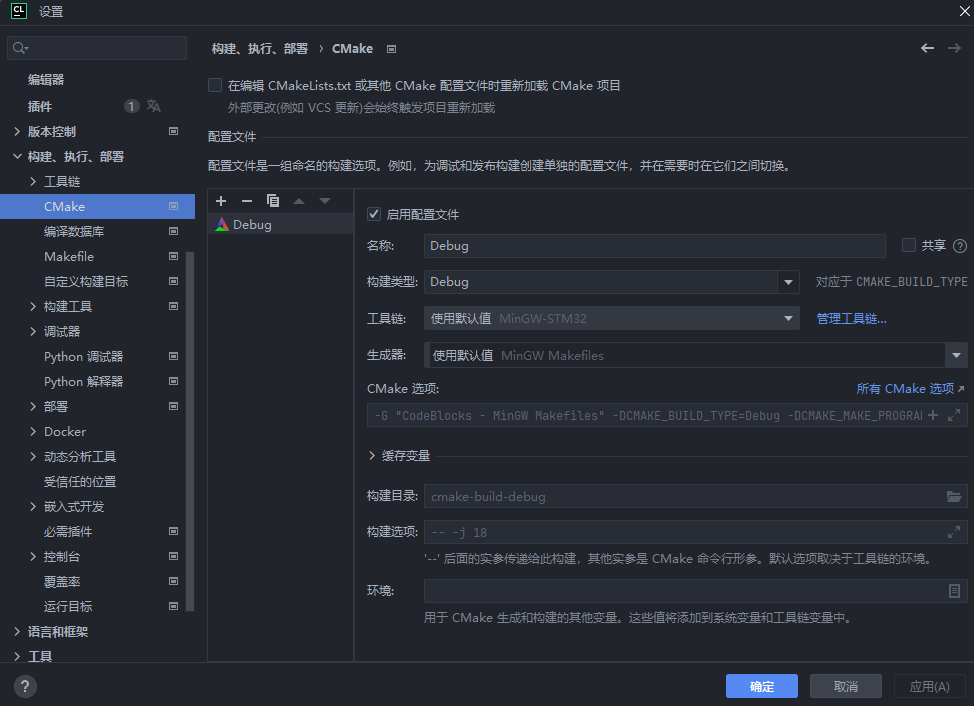
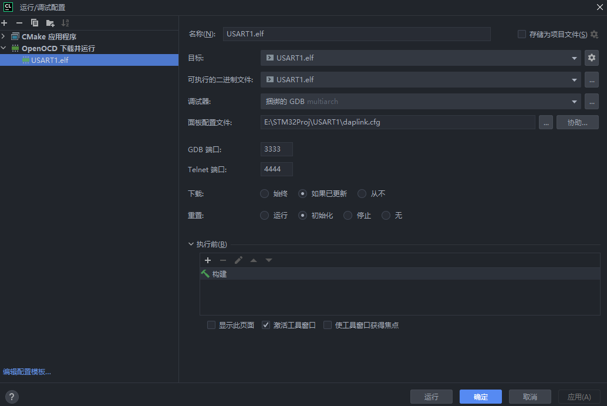
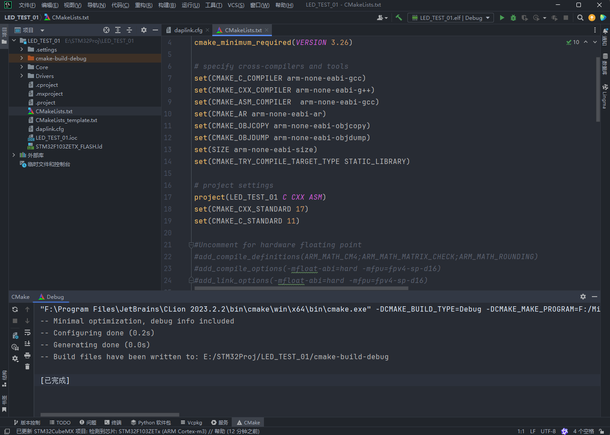
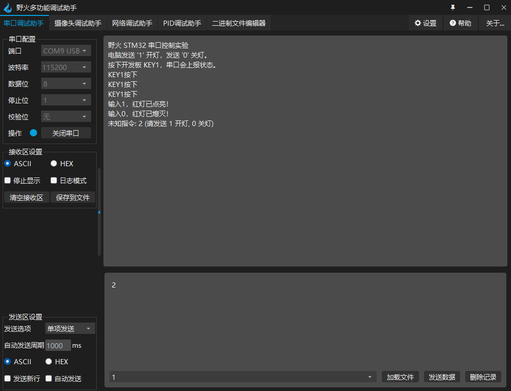

在CLion中编辑STM32CubeMX项目时的工作流¶
以点灯为例，记录如何从零开始配置一个STM32CubeMX项目，并在CLion中跑起来。
STM32CubeMX¶
先选择芯片STM32F103ZET6，创建新项目。
System Core¶
1. 系统调试配置 (SYS)¶
在左侧 System Core -> SYS，将 Debug 选项设置为 Serial Wire。
STM32 的调试引脚（PA13/PA14）默认是开启的。如果你不显式地告诉 CubeMX “我要保留这两个引脚做调试用”，CubeMX 可能会在后续配置中把它们重置为普通 GPIO。
2. 时钟源配置 (RCC)¶
在 System Core -> RCC，将 High Speed Clock (HSE) 设置为 Crystal/Ceramic Resonator（晶振/陶瓷谐振器）。
STM32 内部自带一个 RC 振荡器 (HSI)，但精度较差。野火开发板上焊了一个 8MHz 的外部晶振，精度高且稳定。
启用外部晶振，为系统提供精准的时钟源。
3. 时钟树配置 (Clock Configuration)¶
切换到 Clock Configuration 标签页，在图中间的 HCLK (MHz) 输入框里直接敲入 72，然后回车，点击 OK 让软件自动计算分频。
STM32F103 的最高主频是 72MHz。让芯片全速运行，发挥最大性能。
4. 配置 LED (GPIO Output)¶
阅读野火原理图，找到LED，发现红灯引脚为PB5；在右侧芯片图找到 PB5，左键点击选择 GPIO_Output。右键点击 -> Enter User Label -> 输入 LED_RED。
详细配置 (左侧 System Core -> GPIO -> PB5)：
- GPIO Output Level: High (默认为高电平)：野火板子 LED 是低电平亮。初始化时给 High，让灯默认是灭的。
- GPIO Mode: Output Push Pull (推挽输出)：推挽模式驱动能力强，能输出高低电平，适合驱动 LED。（开漏通常用于总线通信）。
- GPIO Pull-up/Pull-down: No pull-up and no pull-down：输出模式下，电平由 ODR 寄存器决定，通常不需要内部电阻辅助。
5. 配置按键 (GPIO Input) —— 谁来发出指令？¶
在芯片图找到 PA0，选择 GPIO_Input。 Label -> KEY1。
详细配置 (左侧 GPIO -> PA0)：
- GPIO Mode: Input mode。
- GPIO Pull-up/Pull-down: Pull-down (下拉电阻)：查看野火原理图，KEY1 一端接 PA0，另一端接 3.3V。这意味着按下按键时，PA0 连到 3.3V (高电平)。但是当松开按键时，PA0 悬空，电压是飘忽不定。所以要开启内部 下拉电阻 (Pull-down)。松开时，电阻把引脚拉到 GND (0V)；按下时，外部 3.3V 强行把它拉高。这样能保证“不按就是 0，按了就是 1”。
Project Manager¶
设置好名字与存储位置，Application Structure选Advanced，Toolchain选STM32CubeIDE，生成即可。
Clion¶
关于CLion的配置，参考：
确保安装好了OpenOCD，MinGW，arm-none-eabi-gcc。我的配置如下：


在CMake里检查一下工具链是否正确

在CLion中打开该项目。
先配置下载器，创建daplink.cfg：
在调试配置中配置好OpenOCD：

修改STM32F103ZETX_FLASH.ld文件，我用的是 GCC 10.3，但文件中用了 (READONLY) 关键字，这是 GCC 11+ 才支持的语法。删除（READONLY）即可。
后来我对
arm-none-eabi-gcc进行了修改，配置了arm-gnu-toolchain-15.2，就不用再删除READONLY了下载地址：Arm GNU Toolchain Downloads – Arm Developer
选择一个
zip解压后添加到path就行，回到CLion重新设置工具链。注意：
- 修改配置之后退出CLion，删除
cmake-build-debug再重新构建项目（因为 CLion 启动时会读取 PATH）- 标准gcc编译在电脑上运行的程序，arm-none-eabi-gcc编译在单片机上运行的裸机固件。
在CMake中点击刷新看看有没有bug：

现在可以直接在main.c中编写代码了：
点灯结束。
想把串口通信也加进去：
- 按下开发板的按键（KEY1）时，STM32 通过串口告诉电脑“按键被按下了”。
- 在电脑串口助手发送字符 '1'，红灯亮；发送 '0'，红灯灭。
双击.ioc文件打开STM32CubeMX，配置 USART1：
左侧 Connectivity -> USART1。
Mode: 选择 Asynchronous (异步通信)。
Check GPIO: 芯片图可见它是用 PA9 (TX) 和 PA10 (RX)。
Parameter Settings: - Baud Rate: 115200 - Word Length: 8 Bits - Parity: None - Stop Bits: 1
开启串口中断： - 点击 NVIC Settings 标签页。 - 勾选 USART1 global interrupt 的 Enabled。 - 我们要用中断来接收电脑发的 '1' 和 '0'，这样主循环可以专心检测按键，互不干扰。
设置完成后生成代码即可。
回到 CLion，我们需要做三件事： - 添加 printf 重定向（为了方便发送）。 - 编写接收中断回调（为了接收指令）。 - 编写主循环（检测按键并上报）。
1. 引入头文件与变量¶
在 main.c 顶部：
| C | |
|---|---|
2. 实现 printf 重定向¶
在 /* USER CODE BEGIN 0 */ 区域：
| C | |
|---|---|
3. 编写接收回调函数 (控制 LED)¶
在 /* USER CODE BEGIN 4 */ 区域（通常在 main.c 底部）：
4. 编写初始化与主循环¶
这是最关键的一步。为了防止按键按下时串口疯狂打印（刷屏），我们需要加一个简单的状态锁。
修改 int main(void) 函数：

留意到一个问题，由于添加串口之前的点灯代码我删去了
while循环之中的保护区/* USER CODE BEGIN ... */，所以在添加串口生成代码之后回到CLion发现之前编写的点灯代码被清除了。只有放在
/* USER CODE BEGIN */和/* USER CODE END */之间（保护区）的代码才会被STM32CubeMX保留。